SAT-E · Sistema de Alerta Temprana Estudiantil
Consolidar datos institucionales para intervenir a tiempo
Descripción general del sistema: alertas, modelos y resultados
Marzo 2026
Francisco Alfaro Medina
Universidad Técnica Federico Santa María
El problema: la deserción en primer año
1 de cada 4
estudiantes no completa
su primer año universitario
Ventana crítica. El primer semestre —y muy especialmente las primeras semanas— define la trayectoria del estudiante.
- Magnitud — entre 25 % y 30 % abandona en primer año, una de las tasas más altas de la OCDE (SIES / Mineduc).
- Perfil de riesgo (CRUCH) — primera generación universitaria, regiones alejadas, colegios municipales.
- Costo sistémico — el estudiante abandona con deuda (CAE / FIES) y sin título; la institución pierde matrícula.
- La consecuencia práctica: cuando la deserción se detecta en las actas de fin de año, ya es tarde para hacer algo.
Contexto institucional: UTFSM
Dónde se aplica
3 campus — Casa Central, San Joaquín, Vitacura
2 sedes — Viña del Mar y Concepción
De dónde vienen los datos
SIGA — sistema de gestión académica
AULA — plataforma docente (Moodle)
Datos Mineduc — antecedentes de admisión
Categorías de carrera modeladas
| Sigla | Programa |
|---|---|
| ING6 | Ingeniería Civil (6 años) |
| ING5 | Ingeniería de Ejecución (5 años) |
| TU | Técnico Universitario |
| IBT | Ingeniería de Base Tecnológica |
Por qué segmentar
Se modela por categoría de carrera, no con un único modelo global: los perfiles de ingreso, las mallas y los ramos críticos son muy distintos entre un ING6 y un TU.
Qué es el SAT-E
Una herramienta de priorización, no un sistema de decisión
Definición, objetivo y principio
Definición formal
El SAT-E consolida datos de distintas fuentes institucionales en modelos predictivos que generan alertas actualizadas según la información disponible en cada momento del ciclo académico.
Objetivo central
Identificar estudiantes en riesgo de reprobación de asignatura crítica o de deserción antes de que el daño sea irreversible, para activar intervenciones dirigidas desde los equipos de acompañamiento y jefes de carrera.
Principio clave
No es vigilancia, es apoyo. El sistema no toma decisiones automáticas sobre ningún estudiante: es una herramienta de priorización para que los equipos humanos intervengan con criterio.
La salida del sistema no es un veredicto: es una lista priorizada que le dice a un equipo con tiempo limitado a quién conviene llamar primero.
La ventana crítica
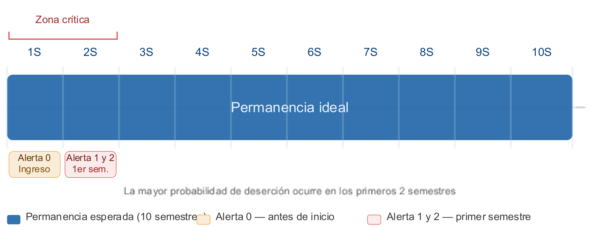
La mayor probabilidad de deserción ocurre en los primeros dos semestres. Las alertas se emiten dentro de esa ventana: Alerta 0 antes del inicio, Alertas 1 y 2 durante el primer semestre.
Las alertas
Tres momentos, tres conjuntos de datos, dos preguntas
Las tres alertas
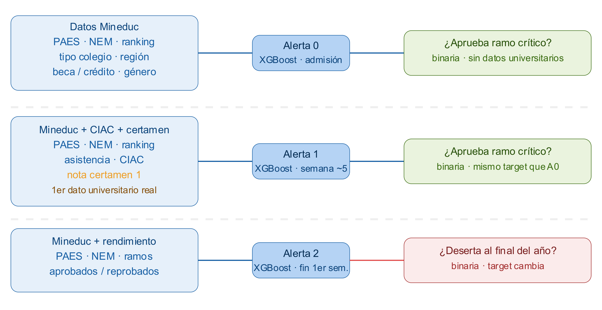
Alerta 0 · admisión — solo datos Mineduc, sin ningún dato universitario todavía.
Alerta 1 · semana ~5 — incorpora asistencia, CIAC y la nota del certamen 1: el primer dato universitario real.
Alerta 2 · fin de 1.er semestre — incorpora ramos aprobados y reprobados; cambia la pregunta.
Ramos críticos: dos criterios
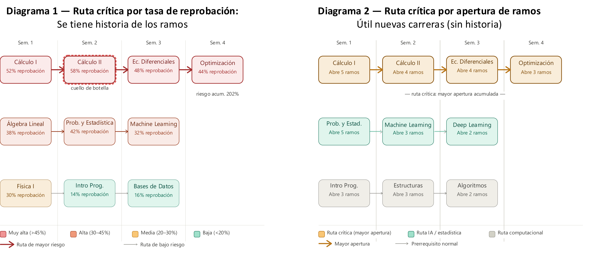
El ramo crítico dejó de ser único
En ING5 / ING6 el ramo crítico era MAT021. En las nuevas mallas ese ramo se separa en MAT060 (Álgebra Lineal) y MAT070 (Cálculo), redistribuyendo el peso: el ramo crítico ya no es único ni predecible, se calcula por malla.
Cómo se calcula la nota crítica C1
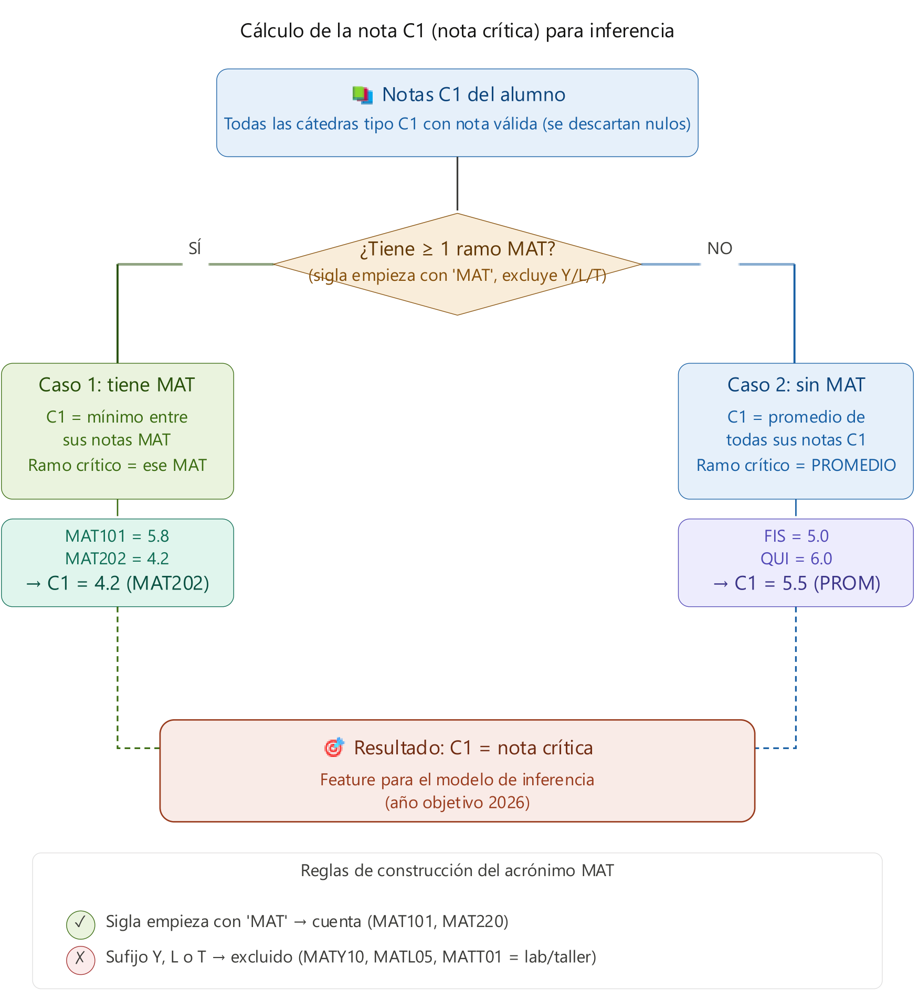
- Se toman todas las cátedras tipo C1 con nota válida; se descartan los nulos.
- Caso 1 — tiene al menos un ramo MAT: \(C1\) es el mínimo entre sus notas MAT, y ese ramo pasa a ser el crítico.
- Caso 2 — sin ramos MAT: \(C1\) es el promedio de todas sus notas C1.
- La sigla cuenta como MAT si empieza con
MAT, pero se excluyen los sufijosY,LyT(laboratorios y talleres).
Por qué el mínimo
Tomar el mínimo y no el promedio es una decisión deliberada: en matemáticas, un solo ramo hundido es mejor predictor que un promedio que lo diluye.
Cómo se construye
Datos integrados, pipelines reproducibles, modelos por cohorte
Data warehouse: una sola fuente de verdad
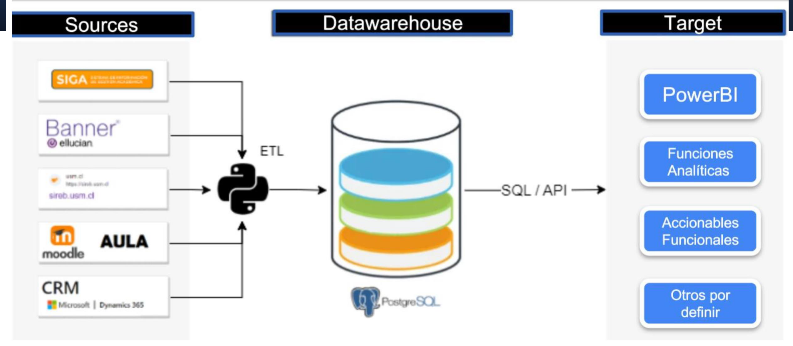
¿Qué es un Data Warehouse?
Un repositorio centralizado que almacena grandes volúmenes de datos estructurados de múltiples fuentes, organizado para análisis, no para transacciones.
silver_undergraduate.new_students_features — antecedentes de ingreso (mdt)
registration.aux_student_grades — notas
studentaid.aux_attendance — asistencia (ciac)
Kedro: de notebook a pipeline productivo
Kedro es un framework de Python que convierte pipelines de data science en código estructurado, reproducible y productivo.
Estructurado — nodos y catálogos de datos explícitos, en vez de celdas con estado oculto.
Reproducible — el mismo pipeline corre igual en el notebook del analista y en el servidor.
Productivo — se puede reejecutar por partes cuando llegan datos nuevos.
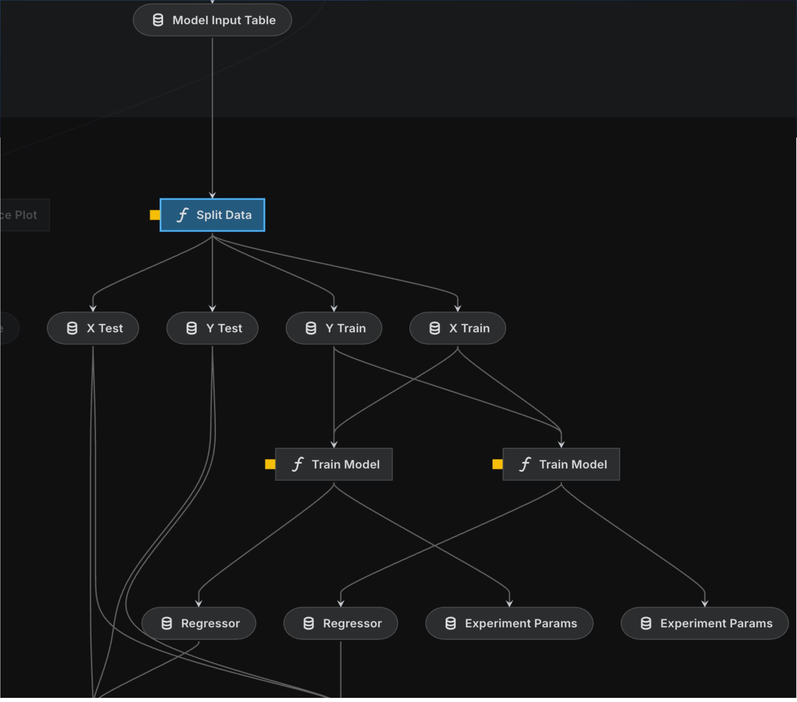
Grafo de dependencias del pipeline: partición de datos, entrenamiento y registro de parámetros de experimento.
De la probabilidad al grupo de riesgo
Los modelos
- XGBoost — árboles de decisión ensamblados; clasifica según presencia o ausencia de alerta. Es el modelo en uso.
- Red neuronal — capas de neuronas interconectadas; explorada como alternativa.
El paso a categorías
La probabilidad estimada se convierte en un grupo de riesgo aplicando umbrales según criterios operacionales:
Sin Riesgo · Riesgo Bajo · Riesgo Medio · Riesgo Alto
Advertencia metodológica
Los grupos no son comparables entre años. La distribución de probabilidades varía entre cohortes y cada modelo se entrena con datos distintos, así que un “Riesgo Alto” de 2025 y uno de 2026 no significan lo mismo.
Cómo leer la importancia
La importancia de variables no es causalidad. Se interpreta según la utilidad de cada variable para generar divisiones (splits) dentro del modelo, no como una relación causal directa.
Cómo entrenamos: esquema expansivo
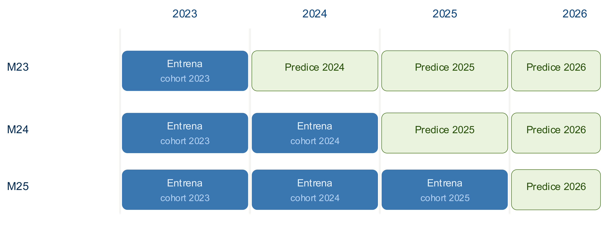
Ventaja
Entrenar con los datos más recientes es más representativo del contexto actual: captura cambios en el perfil de ingreso y en las políticas institucionales.
Desventaja
Cada modelo se entrena con datos distintos, así que M23, M24 y M25 no son directamente comparables: una diferencia en métricas puede deberse al cambio en los datos, no a una mejora real.
Resultados
Qué pasa cuando entra el primer dato universitario
Alerta 0 vs Alerta 1 — cohorte 2025
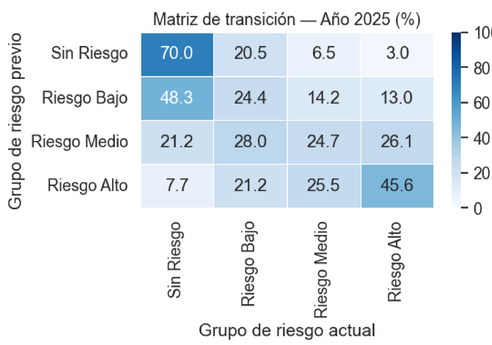
- Cómo leerla: cada fila es el grupo de riesgo previo (A0) y cada columna el actual (A1). La diagonal son los que mantienen su condición; a la izquierda bajan de riesgo, a la derecha suben.
- El 70 % de los estudiantes sin riesgo permanece en esa condición.
- En cambio, Riesgo Medio y Riesgo Alto presentan mucha más movilidad: el Riesgo Medio se reparte casi uniformemente entre las cuatro categorías (21,2 / 28,0 / 24,7 / 26,1).
- Conclusión: los grupos de menor riesgo tienden a mantenerse; los de mayor riesgo requieren seguimiento y apoyo focalizado.
Cohorte 2026: el problema de cobertura
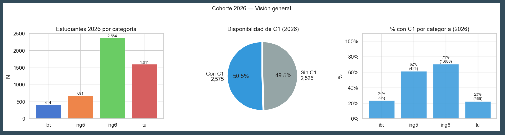
50,5 % de la cohorte tiene nota C1 disponible (2.575 de 5.100)
24 % / 23 % cobertura de C1 en IBT y TU, contra 71 % en ING6
Alerta 0 vs Alerta 1 — cohorte 2026
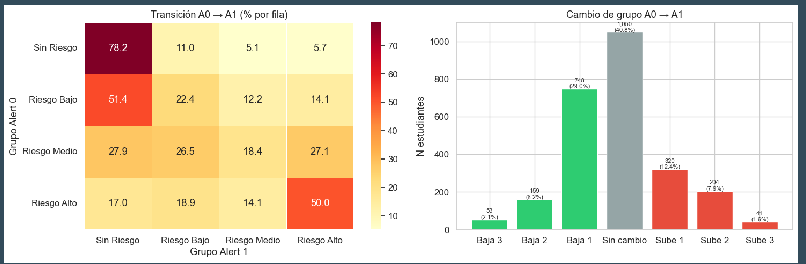
Se repite el patrón de 2025: el 78,2 % de los sin riesgo se mantiene, mientras el Riesgo Medio sigue siendo el grupo más volátil (27,9 / 26,5 / 18,4 / 27,1).
El 40,8 % no cambia de grupo. De los que sí se mueven, bajan más de los que suben: 37,3 % baja de categoría y 21,9 % sube.
Qué variables pesan
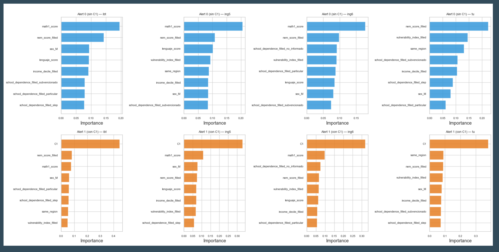
Fila superior (Alerta 0, sin C1) — la importancia se reparte entre math1_score, nem_score, language_score, vulnerabilidad, dependencia del colegio y región. Fila inferior (Alerta 1, con C1) — C1 domina y desplaza a todo lo demás.
Conclusiones
Dificultades
- Obtener la nota crítica a tiempo — depende del registro oportuno por parte de los profesores, y hoy solo la mitad de la cohorte la tiene cuando se calcula la Alerta 1.
- Dependencia de C1 — cuando está disponible, concentra casi toda la importancia del modelo y desplaza al resto de las variables.
- Definir los grupos de riesgo — los umbrales son operacionales y no comparables entre cohortes: es un problema de formulación, no de ajuste.
Mejoras en curso
- Análisis exploratorio más amigable para el negocio — que jefes de carrera y equipos de acompañamiento puedan leer las alertas sin intermediación técnica.
- Pipeline robusto — poder ejecutar el sistema en cualquier momento del ciclo académico, no solo en fechas fijas.
- Trabajo asociado en backtesting y monitoreo de data drift para vigilar la degradación de los modelos.
El SAT-E ya funciona como herramienta de priorización. El cuello de botella hoy no es el modelo: es la disponibilidad oportuna del dato que lo alimenta.
Gracias
¿Preguntas?
SAT-E · Sistema de Alerta Temprana Estudiantil
Presentaciones relacionadas: SAT-E — backtesting · SAT-E — data drift
Francisco Alfaro Medina · Universidad Técnica Federico Santa María
https://github.com/fralfaro/talks

SAT-E · Sistema de Alerta Temprana Estudiantil · Universidad Técnica Federico Santa María